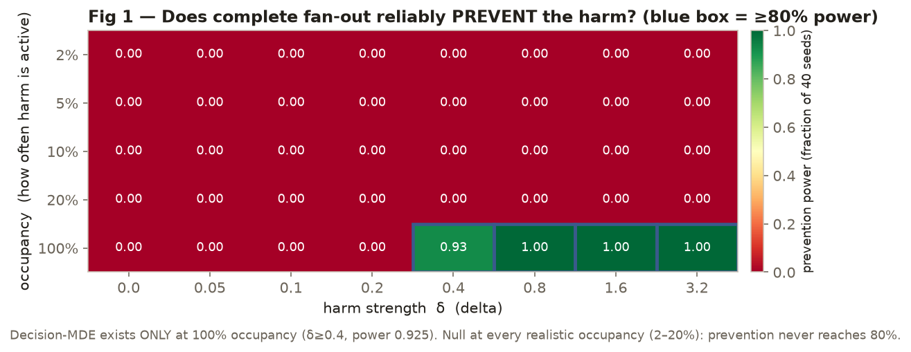
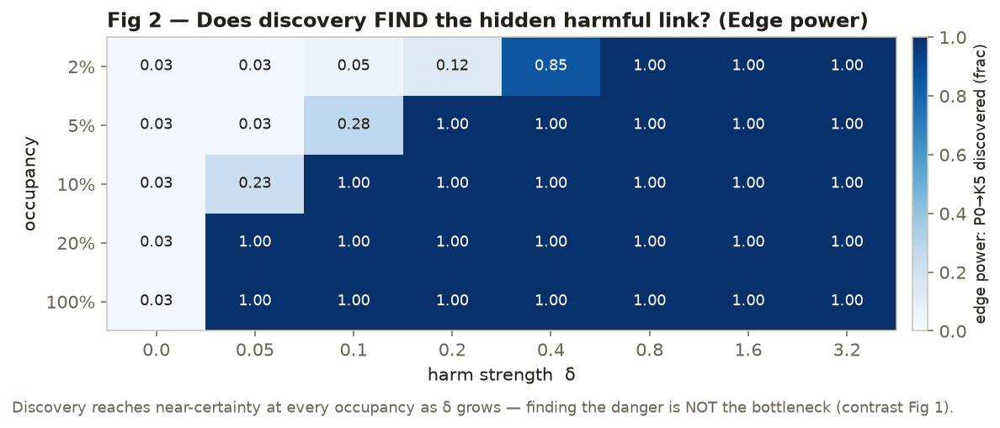
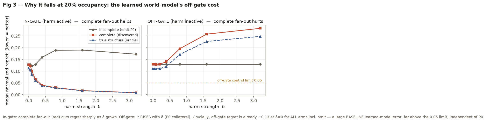
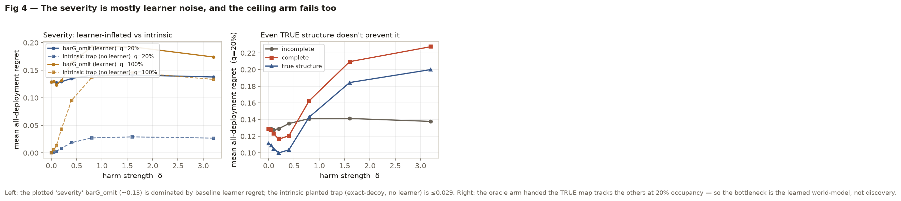

The thesis holds only in the degenerate 100%-occupancy case. Complete causal fan-out reliably rejects the locally-harmful action only when the harmful regime is active everywhere (Decision-MDE = barG_omit 0.163, prevention power 37/40 at δ=0.4). At every realistic occupancy (2–20%) the Decision-MDE is null — prevention never reaches 80% power. Discovery is not the bottleneck (it finds the edge at every occupancy); the learned world-model's off-gate generalization is, and this is confirmed by the true-structure (oracle) arm failing the same way.
E2's stress axis is shared-control fan-out: one command P0 drives several KPIs,
and a co-parent-gated edge P0→K5 makes the locally-attractive move globally harmful — but only
inside a gate on the pre-command state (P6,P7). The question (the E5 headline, exercised here on the
frozen E2 spine, scope = E2-ID, not E5 deployment): given a fully discovered causal fan-out,
does the end-to-end pipeline reject the harmful action across a realistic deployment?
Pre-registration (cleared by sol over three rounds): PREDECLARE_phase4b_gated_mde_v3.md +
_v3_addendum.md (12-item checklist) + _v3_addendum2_gpu.md +
_v3_addendum3_eval.md. Unified synthetic SCM
K5 = base_p0free(P6,P7) + δ·sgn·(cmd−C0)·1[(P6,P7)∈B], sgn=−1, C0=0 (derived outcome-free).
True end-to-end learned mechanism (a deliberate step onto the learned-world-model track): M3 discovery → k-NN world-model (k=64, standardized parents, float64, GPU, exact neighbors) → recursive fitted H=1 rollout → planner, all on the frozen E2 machinery. Four capacity-matched arms scored by all-deployment normalized regret over the D_E2_ID bank (16,384 committed states; OPT-4 stratified S_eval + IPW):
P0 forced out of K5's inputs.{P0,P6,P7}: the learnability ceiling.base_p0free, no learner: the intrinsic planted-trap severity.Grid: occupancy q ∈ {2,5,10,20%} + 100%; harm strength
δ ∈ {0,.05,.1,.2,.4,.8,1.6,3.2}; 40 discovery seeds. Per seed, prevention success =
G_omit^deploy > 0.02 AND (G_omit − G_disc)^deploy ≥ 0.80·G_omit^deploy; decision
power = #success/40. Decision-MDE = first eligible, control-passing cell with power ≥ 0.80.
Edge-MDE = first cell with P0→K5 declared in ≥ 80% of seeds.


| Occupancy | Edge-MDE (signal RMS) | Decision-MDE (barG_omit) | Prevention |
|---|---|---|---|
| 2% | 3.40 | — | never |
| 5% | 2.60 | — | never |
| 10% | 1.84 | — | never |
| 20% | 1.30 | — | never |
| 100% | 2.89 | 0.163 | δ≥0.4 (power 0.925→1.0) |
The in-gate trap is genuinely live: the incomplete pipeline makes the wrong in-gate call in up to
94.8% of gated states as δ grows (decoy_worse_frac). So the failure is not that the
trap is dormant — it is that the net all-deployment benefit does not materialize.


(q,δ,seed) records present, well-formed, 0 NaN, no
duplicate keys. 68 cells exercise the lagged-K5 nuisance path (28 in K5's parents; 40 = seed 32's bad_disc in K2).rescore_gated_mde.py → gated_mde_rescore.json).k1_hat[5] into the terminal model. The batched implementation was verified to reproduce
the frozen reference rollout to ~1e-7 (L6 device tolerance); it is a byte-identical no-op on unaffected cells.max|Δpval|=0); GPU float64 throughout (L6-equivalence-gated).G_deploy = occ·G_cond + (1−occ)·G_off holds per cell. No
bug or leakage found.sol's verdict is SOUND-WITH-CAVEATS — "sound enough to inform, but not itself authorize, the user-gated E5 decision." The following are reporting/cleanup items (none change the headline) to make the result fully citable:
par_K5_disc + a bad_disc boolean, no support distances).mean(|G_disc^off−G_omit^off|)≤EQ but the pre-reg reads |mean(G_disc^off)−mean(G_omit^off)|≤EQ
(the implementation is stricter; it changes no verdict here). Serialize q=1 off-gate status as
NOT_APPLICABLE, not boolean true.This experiment did its job: it says the binding constraint for the E5 headline is world-model quality / sample efficiency, not causal discovery. Concretely, a learned world-model that generalizes poorly away from the well-sampled region (here a memory-based k-NN) pays an off-gate penalty that swamps the in-gate prevention benefit at realistic occupancy. Levers worth weighing for E5: a world-model with better off-support behavior (parametric/structural do-propagation rather than global k-NN), occupancy-aware evaluation, or restricting the extra-parent influence to the gate region. The E5-finalize decision remains USER-GATED; this result informs it but does not force it.
exp(−x²) E2 benchmark, which has no
real O-RAN grounding (a known, documented gap). It measures where the method breaks and why. A deployed system
would run discovery and world-model fitting offline and make cheap per-decision planner lookups
online — it would never compute a sweep like this. Result is E2-ID and rides on a fixed k-NN learner.
Figures regenerate live from the raw records: python reports/2026-09-15-gated-decision-mde-result/make_figs.py
(reads scratchpad/design_adaptive_m3/gated_mde_records/*.json; numeric appendix in
figures_data.json). Harness: validate_gated_mde.py, gated_mde.py,
learner_knn.py; scorer rescore_gated_mde.py; config frozen_config.json /
frozen_eval.json; reviewer note sol_result_review.md. Run notes: the sweep was executed
detached (Start-Process, watchdog-immune) in GPU float64; parallel workers give no speedup (single-GPU serialize);
float32 is disallowed (breaks the frozen float64/L6 gate).
reports/ is gitignored by repo convention — this record lives on disk + memory, not in git. DEV/truth-free; promoting anything here to a live/frozen method is a separate, user-gated pre-registration.